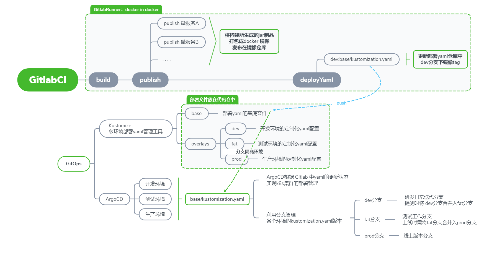

云原生下的CICD流程
前言
敏捷迭代需求旺盛的今日，Devops领域作为支撑起快速工作的基石，是必不可少的。
本文主要介绍在云原生环境中，一套CICD任务的具体流程。
所用工具
- GitlabCI
GitLab提供持续集成服务的一整套系统。在GitLab8.0以后的版本是默认集成了GitLab-CI并且默认启用的。
使用GitlabRunner做任务构建。 - Kustomize
便捷管理多环境yaml文件的开源工具。 - ArgoCD
一个声明式，Gitops理念下用于Kubernetes的持续交付工具
流程简述

CI - 持续集成
相关概念
源代码仓
业务代码所在仓库daployYaml代码仓
存放kubernetes部署的yaml文件代码仓库，基于kustomize管理多个环境下的部署yaml文件.gitlab-ci.yml
定义CI任务的工作流，存放在源代码仓的各个分支的根目录下GitlabRunner
运行CI任务的工具，可有多种方式部署：二进制、docker、kubernetes等镜像仓库
存放业务包镜像的harbor镜像仓库
CI任务的启动
- 利用
源代码仓根目录下的.gitlab-ci.yml所定义的CI流程，根据触发规则自动或手动触发CI任务 - 基于docker in docker 部署的
GitlabRunner构建CI任务
- 利用
CI步骤
- 构建镜像并上传到
镜像仓库 - 将当前CI任务所生成的新镜像地址和tag号传递到
daployYaml代码仓的base/kustomization.yaml 中，供ArgoCD获取和部署
- 构建镜像并上传到
CD - 持续部署
kustomize管理yaml的实例仓库
环境区分的实现
- base/kustomization.yaml
存放CI任务生成的新镜像地址和tag号，通过分支区分环境 - overlays/xxx 目录
在daployYaml代码仓中，每个环境都有自己的overlays/ 目录，用来自定义各个环境的不同的配置
- base/kustomization.yaml
优势
通过分支区分镜像地址 加 overlays/xxx定义各个环境配置 共同合作区分环境环境，实现：- 减少人为操作，镜像地址+tag号均通过CI自动输出到daployYaml代码仓的base/kustomization.yaml，
- 提测和上线时需要合并分支，自然而然地增加了审核机制
- 统一镜像地址，保证CI文件的稳定性（不需要多一个环境就在CI文件中新增配置）
- 更好的版本管理，每个环境的版本迭代记录均在各自分支下
ArgoCD的持续部署
- ArgoCD通过kubernetes的apiserver接入多集群
- 使用自带RABC组件管理多用户
- 将gitlab中的
daployYaml代码仓接入ArgoCD集群 - ArgoCD集群拉取
daployYaml代码仓各环境的部署文件，实现持续交付工作